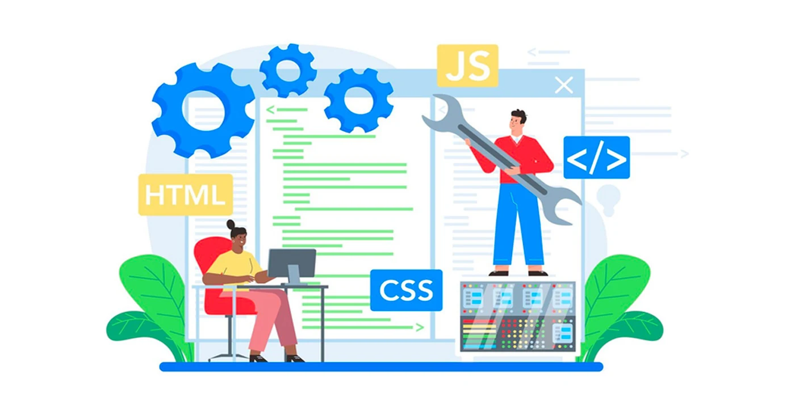
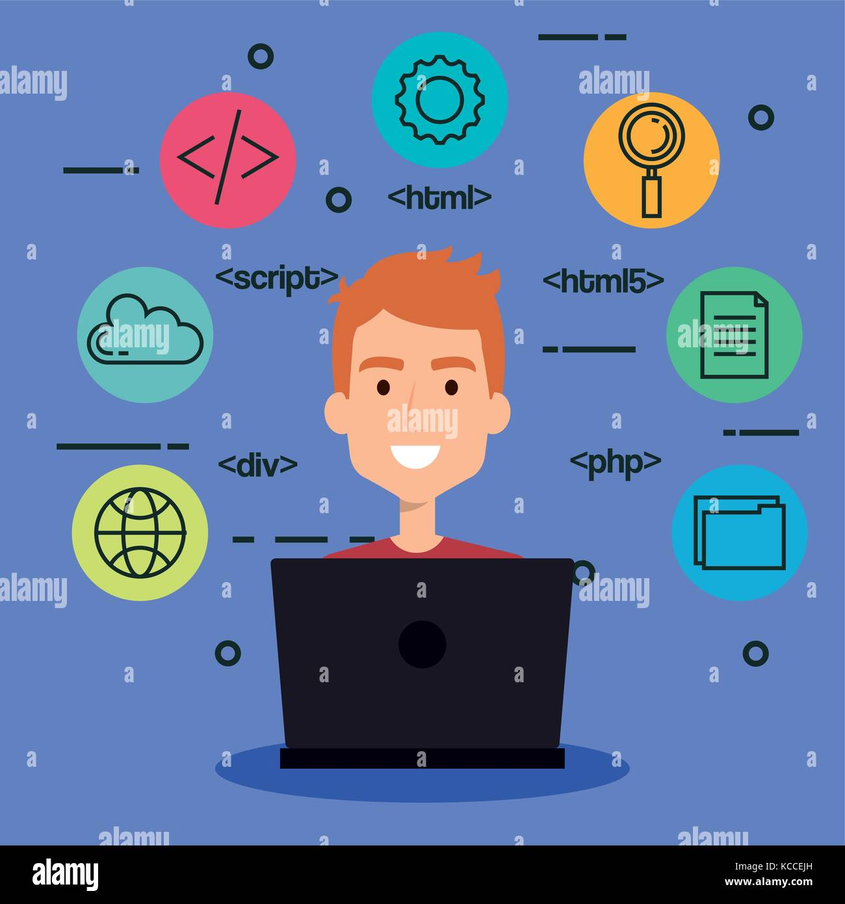
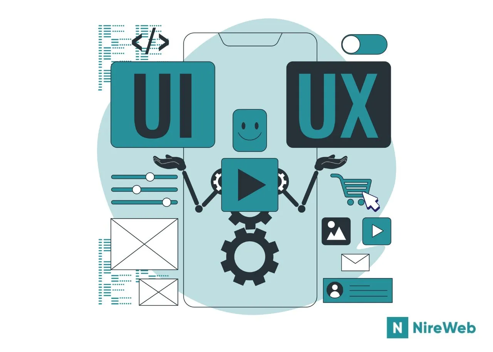
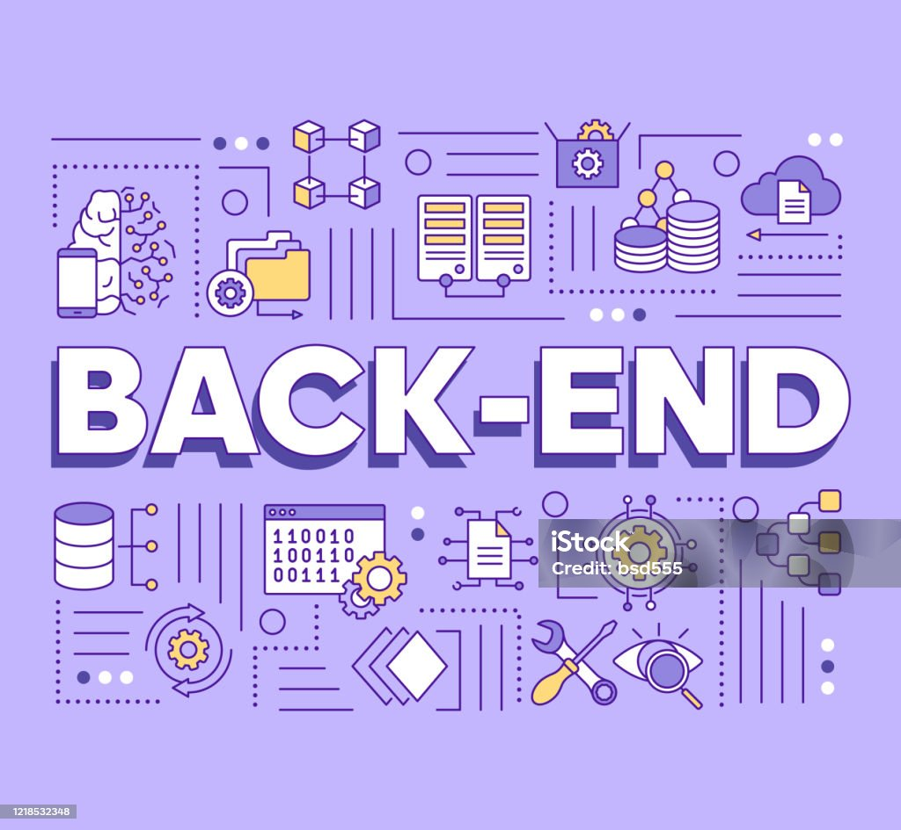
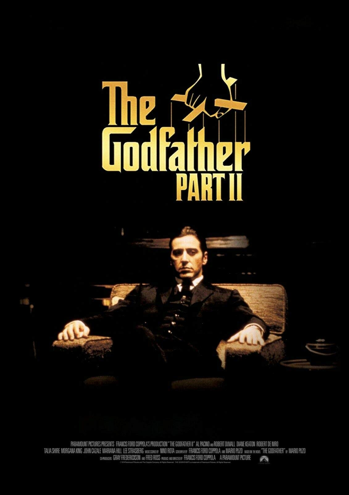
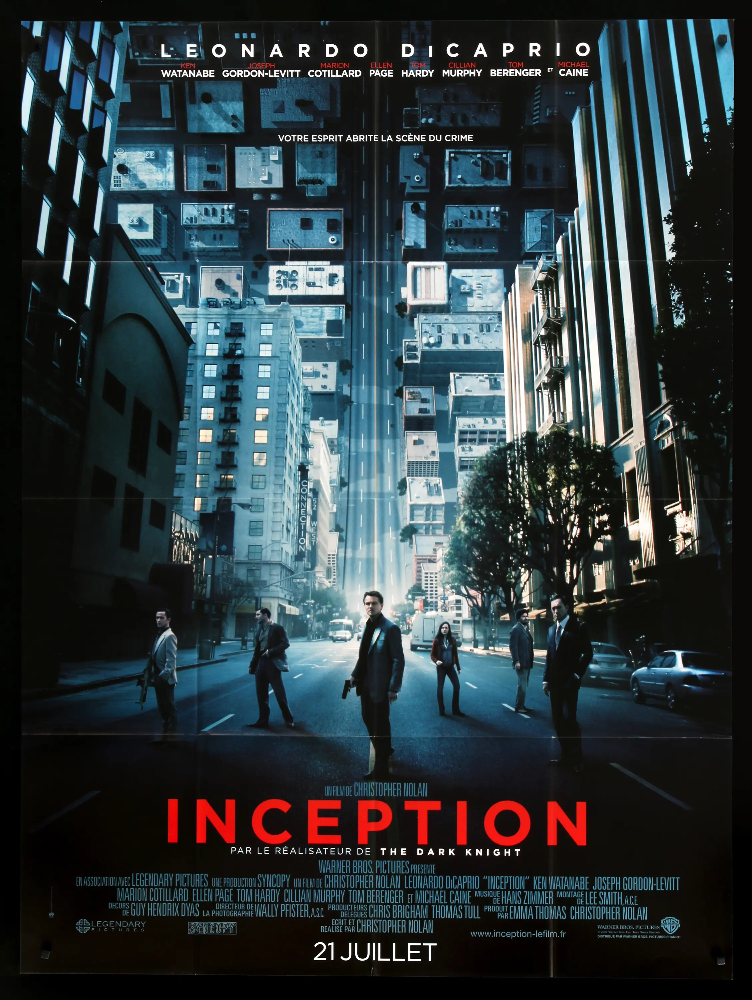
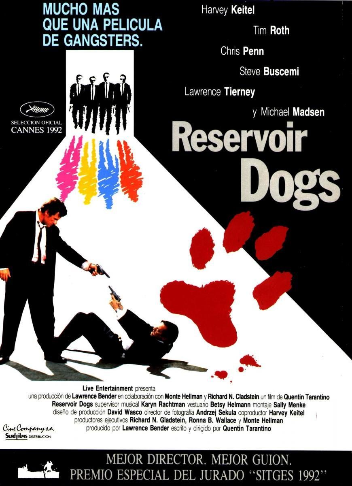

Desarrollo
Frontend
Me gusta entregar experiencias de usuario fluidas y atractivas, buscando que el cliente se sienta atraido por el producto.
👋 Hola, soy
Soy estudiante de la Tecnicatura den Desarrollo de Software con ganas de construir cosas que funcionen bien y se vean mejor.
Hablemos
Las áreas que más me apasionan y a las que dedico mi energía.

Me gusta entregar experiencias de usuario fluidas y atractivas, buscando que el cliente se sienta atraido por el producto.

El diseño existe para resolver problemas. Me fascina pensar en cómo las personas interactúan con las pantallas.

Desde el minuto 0 me apasiona construir el motor que hace que todo funcione.
Lo que sé, lo que estoy aprendiendo y lo que hago cuando no programo.
| Actividad | Frecuencia |
|---|---|
| Futbol | Semanal |
| Peliculas y Series | Diaria |
| Lectura | Diaria |
| Ciclismo | Semanal |
| Contribuir en open source | Mensual |
Tres films que me marcaron y que recomiendo sin dudarlo.

Una obra maestra por donde se la mire. La narrativa, la dirección, las actuaciones... todo es perfecto.

Nolan lleva la narrativa al límite. Una historia de capas que te obliga a pensar mucho más allá del final.

Accion. Suspenso. Te sentas a esperar lo inesperado. Tarantino en estado puro.
Estoy disponible para colaboraciones, consultas o simplemente para intercambiar ideas sobre tecnología y diseño. ¡Escribime!